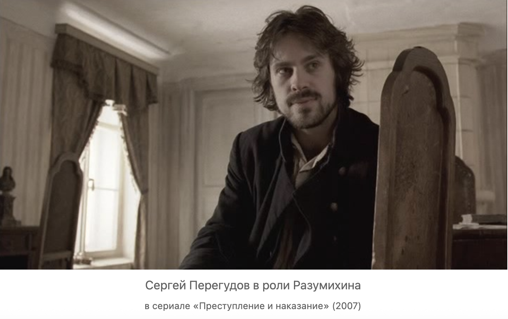

Crime and Punishment. Part II notes
- ch 1 (at the police station)
slowtime: "He lay like that for a long time" (89).
R is summoned to the police station because he owes money and is ready to confess (94)
R promised to marry landlady's (widow Zarnitsyna) daughter, she died (102)
R even confesses (105-6) but nobody pays attention to what he says.
Infinite solitude (103)
R eavesdropping on police officers talking about the murder (104-5).
R faints and police officers ask him whether he is ill he says that he was ill since yesterday (since the murder) (105).
R needs a relief--reason for his confession.
- ch 2 Hiding the loot, wandering near water, not being able to get water (that is, relief)
irrational behavior: R wants to through eight items into water
R hides under the loot under the stone, never counts money in the stolen purse (110)
R visits Razumikhin on Vasilevsky Island near the Malaia Neva bridge (110-111)
Raz. offer him a translation job (112)
R regains his senses at river, looking at the palace and St. Isaacs, a woman gives him money "for Christ's sake" (114)
R rejects money, he is cut off
R back to his room (nightmare dream (115-116))
water and unconciousness
- ch 3 Mr. Common Sense Gets Closer to Raskolnikov
Razumikhin comes, to be precise Vrazumikhin (the one who brings to reason) (118)
calls the room "ship's cabin" (118) start moving toward salvation
R spends 4 days in delirium (119)
miraculously gets 35 rubles from his mom (119)
Razumikhin calls R Rodya and his brother (122)
Razumikhin moves to R's neighborhood (125)
R thinks of escaping from his burden far away ... to America (127)
Razumikhin takes care of financials. He is Mr. Common Sense

Figure 1. Razumikhin in the 2007 Russian
tv seriesCrime and Punishment
- Ch 4 Lying "leads to the truth" (135)
Razumikhin is a remote relative of Porfiry (133)
Razumikhin tells the story of falsely accused Mykola (136-39)
R listens about Mykola, his attempt to commit suicide and confession
Mykolai suffers for others.
- Ch 5 Mr. Puddle
ship's cabin is the room (143)
Luzhin retells Lebezitanikov's ideas about rational egoism (148-149)
Raz explaines that Luzhin saves money on Dunia's apartment (147)
Raz explaine the murder (didn't rob only killed, chance, not calculation (150))
Scandal Scene: R tells Luzhin that his rational egoism is a justification of murder, L wants to marry Dunya to dominate her (152-53)
Structure of Dostoevsky's Scandal Scene
1. Transitional Space: Room/intersection/bridge/, open doors
2. Central Ideas are tested, very often presented in an inverted way.
• For example, a villain would enact protagonist’s thought in front of him (Part 5, chapter 3):
• Self interest and Doing Good for the Community,
• Sonia and Rask are sinners and there is no difference between them.
3. brings everyone together into a mass scene,
4. something unpredictable happens(miracle).
5. scatters everyone at the end.
- Ch 6 The Crystal Palace at the Haymarket
confessing to police clerk Zamyotov at the Crystal Palace restaurant out of spite (165)
winess suicide
revisist the crime site (173)
decides to go the police Station to confess
R is stopped by Marmeladov's death
- Ch 7. Death of Marmeladov
R pays for everything
function: M dies to prevent R from confessing wihtout repenting
a lot of water and tears (this is how you confess and die)
Sonya appears (183)
Mother and sister arrive (192) Razumikhin is there.